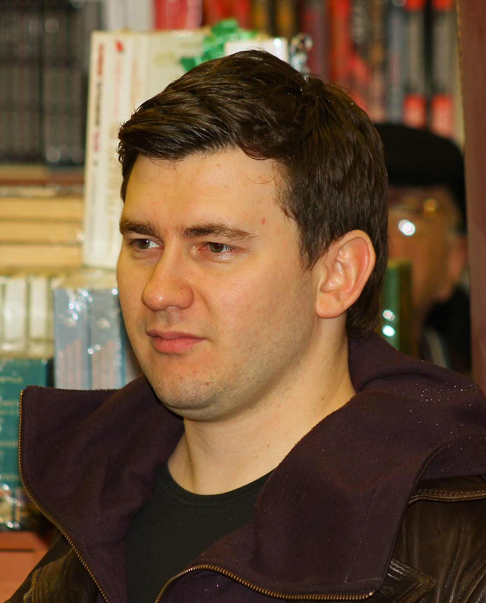
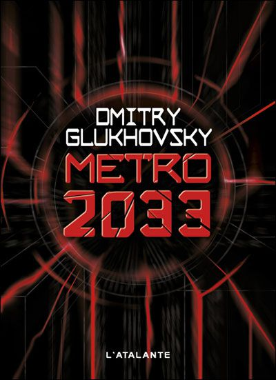

HISTOIRE
- 
-
Metro 2033 est un jeu vidéo de tir en vue à la première personne post-apocalyptique et un survival horror développé par 4A Games et édité par THQ. Il est sorti sur PC et Xbox 360 le 18 mars 2010, après un développement d'environ quatre ans. Il s'agit du premier jeu de la série. L'histoire est essentiellement basée sur le roman éponyme de Dmitri Gloukhovski, Métro 2033. Le joueur y incarne Artyom, un des 40 000 habitants du métro de Moscou ayant survécu à une guerre nucléaire qui dévasta la Russie ainsi que la plus grande partie de la planète vingt ans plus tôt. Artyom doit faire face aux multiples dangers nés de l'hiver nucléaire et se frayer un chemin à travers les tunnels du métro moscovite, reconverti en dernier bastion de l'humanité, pour délivrer un message de la plus haute importance à un ordre dévoué à la protection du métro.
DECOUVRIR LES FACTIONS - 